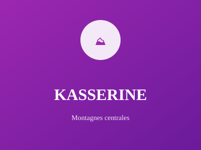

Région montagneuse du centre-ouest

Région montagneuse du centre-ouest, Kasserine est riche en ressources naturelles. Elle accueille le parc national du Djebel Chambi et plusieurs sites archéologiques romains importants.